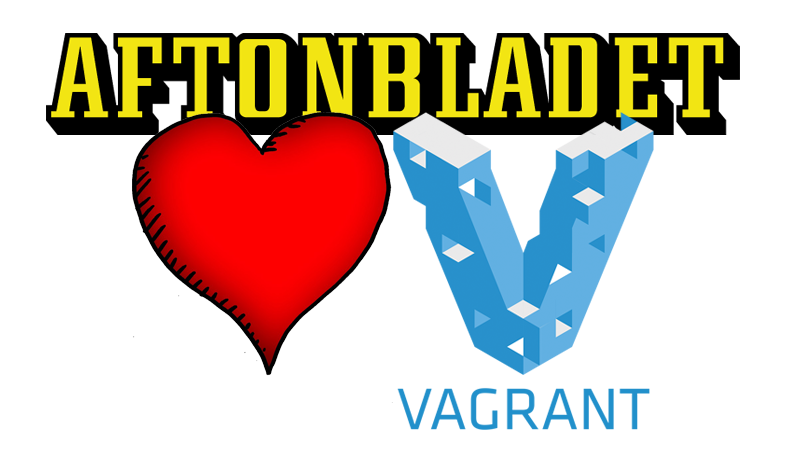
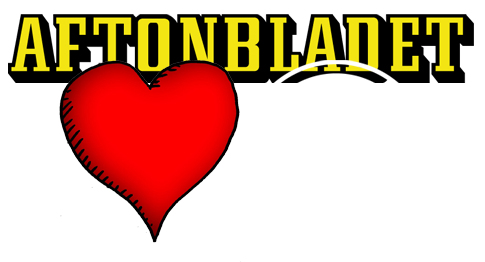
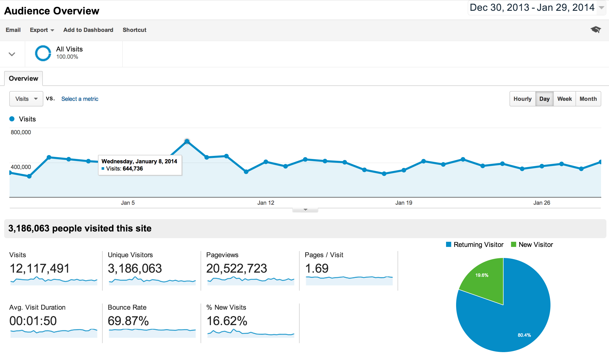

Best thing since sliced bread

Bloggar
Sajter
Advertorials

Vad är problemet?
Vad är Vagrant?
Lösningen på alla problem!
Virtuell miljö
Isolerad
Setupscript
vagrant up!
$ git clone https://github.com/myawesomeproject
$ cd myawesomeproject
$ vagrant up
Hur fungerar det för oss?
Varying Vagrant Vagrants
➠Mer info @github
Nya projekt
Nya medarbetare
Synkade miljöer
Vår setup
- LAMP
- Composer
- Ruby / Vlad
- Nodejs
- Memcached / Redis
- Varnish
- APC
- ..och mycket mer!
Labbande
Prata Vagrant med mig!
Vi delar gärna med oss.
Twitter: @chredd
christoffer.larsson@aftonbladet.se